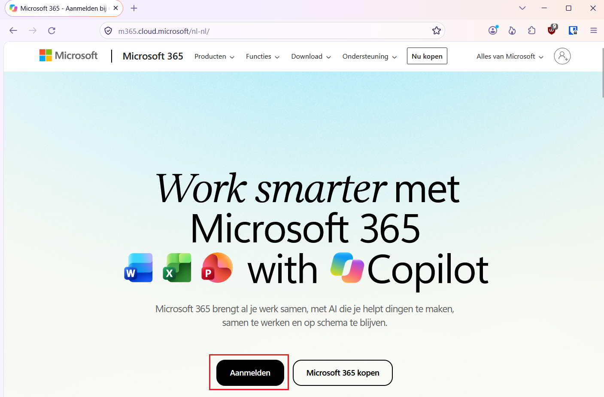
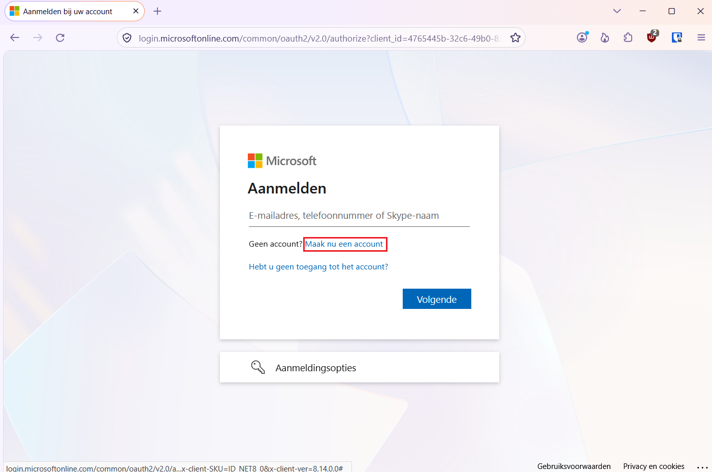
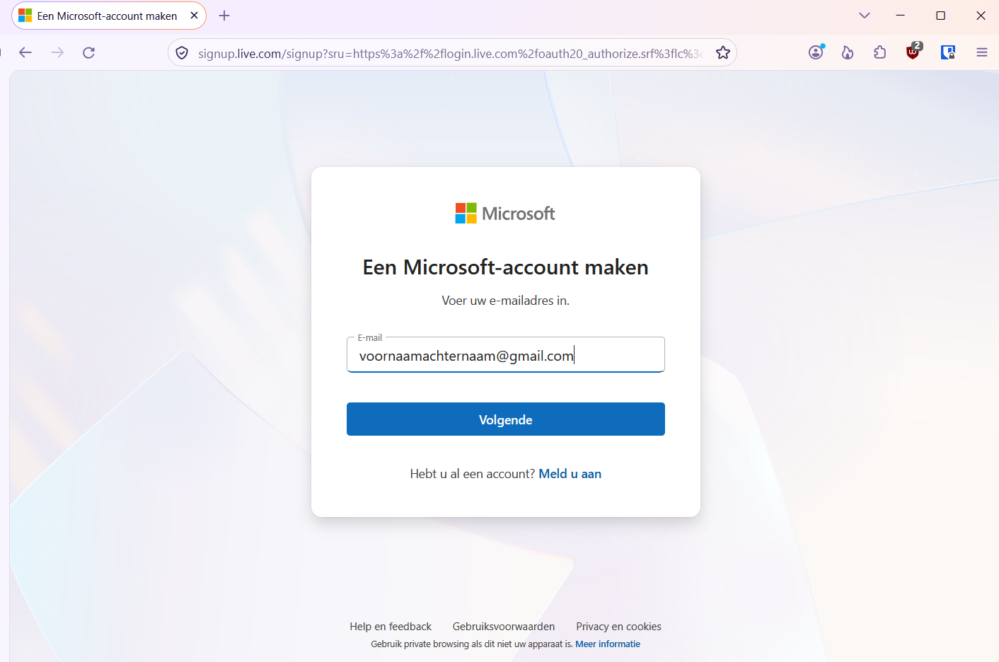

Outlook
Met het stappenplan hieronder maak je gratis een Outlook-/Hotmail-account aan. Je hebt dit account nodig om een Microsoft 365 Developer-tenant aan te vragen via je Visual Studio Professional-abonnement.
Account aanmaken
Gebruik hiervoor een browser waarin je Blackboard of je PXL-e-mailadres NIET raadpleegt. Je PXL-account is namelijk ook een Microsoft-account. Gebruik je dezelfde browser, dan word je mogelijk automatisch aangemeld met je PXL-account in plaats van met het Outlook-/Hotmail-account dat je net hebt aangemaakt.
1. Office.com
- Surf naar de website https://office.com
- Klik op de knop Aanmelden

2. Account maken
- Klik in het volgende venster op de blauwe tekst "Maak nu een account"

3. E-mailadres
- Vul een e-mailadres in
Je kan hier een persoonlijk e-mailadres invullen dat je al gebruikt, bijvoorbeeld een Gmail- of iCloud-adres. Je Outlook-account wordt dan aan dat e-mailadres gekoppeld. Je kan ook een volledig nieuw Outlook-e-mailadres aanmaken.
Wil je een volledig nieuw e-mailadres aanmaken, typ dan het volgende: voornaamPXLachternaam@outlook.com

Volg de overige stappen om je Outlook-account aan te maken.
4. Invullen
Vul daarna in het formulier het e-mailadres in dat je hebt gebruikt. Heb je je persoonlijke e-mailadres aan je Outlook-account gekoppeld, vul dan dat e-mailadres in. Heb je een nieuw Outlook-e-mailadres aangemaakt, vul dan dat nieuwe e-mailadres in.
Loop je vast of is iets niet duidelijk? Spreek dan je vaklector aan of stuur hem/haar een e-mail met een schermafdruk.